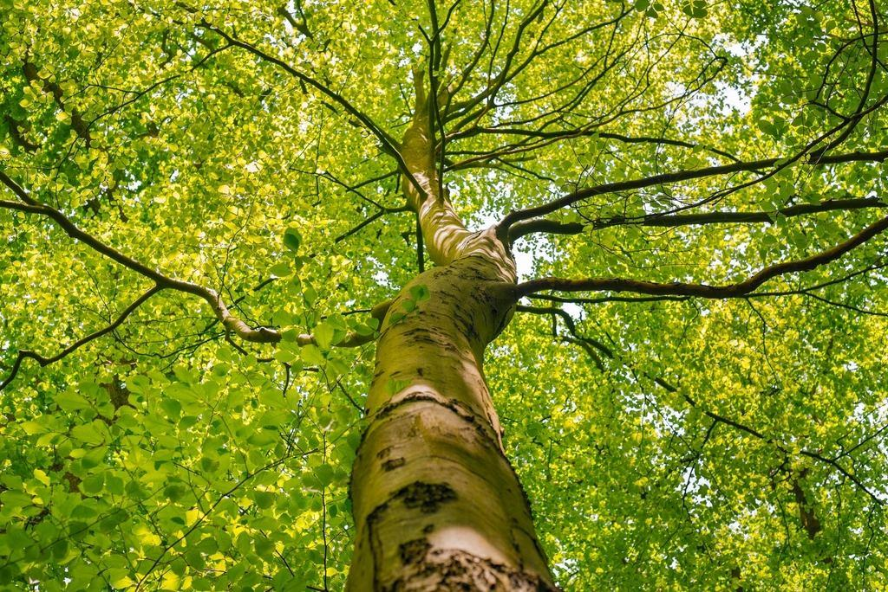
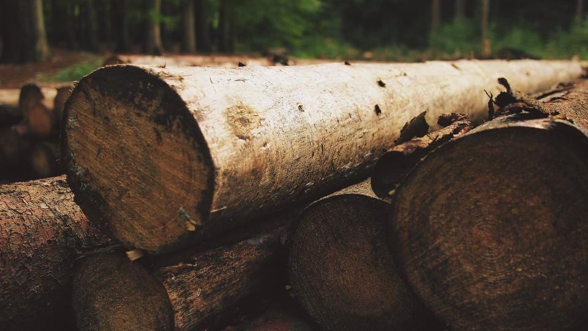
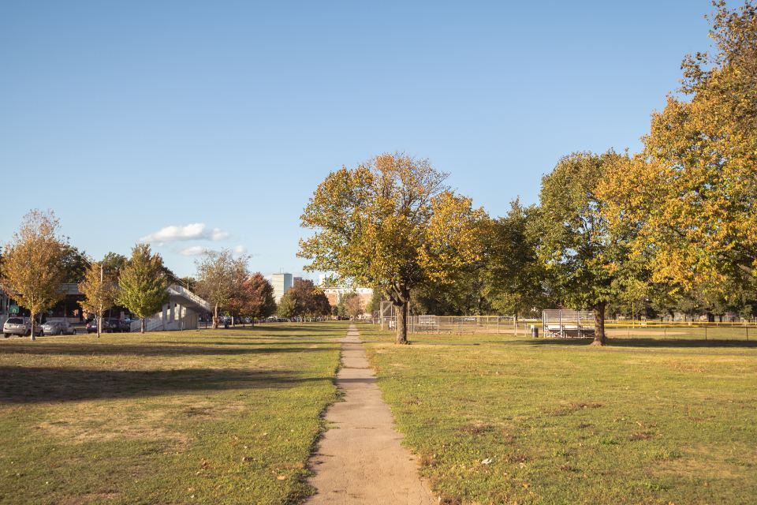
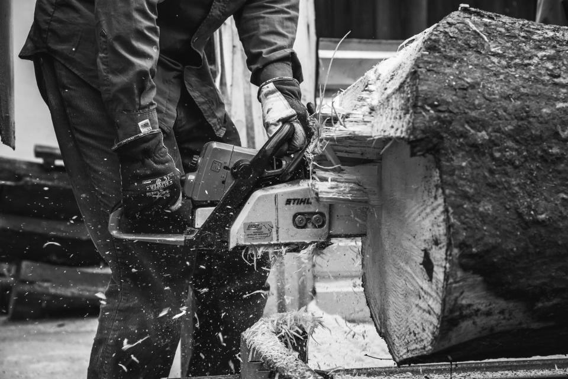
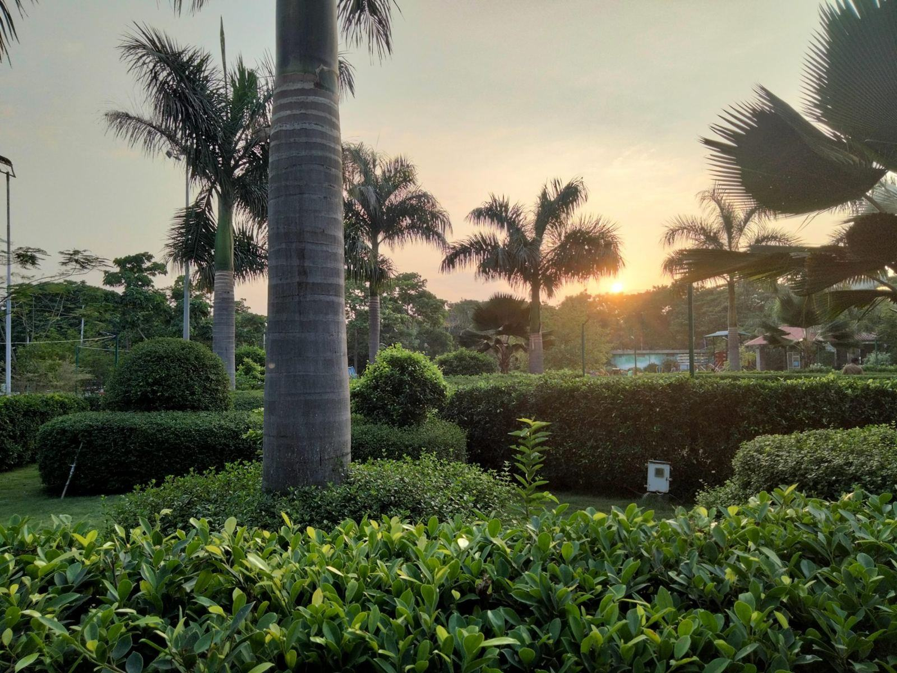

Om Kronkoll
Kronkoll startades 2017 av Johan Ersson, som arbetat sju år som arborist i Falu kommun och tröttnat på att se friska träd fällas för att ingen visste hur de mådde inuti. Han köpte en ljudtomograf och en resistograf, och i dag är vi sju anställda med kontor vid Stora torget i Falun.
Vi mäter röta, sprickor och rotförankring med tomograf och dragprov – så att bara de träd som verkligen är farliga fälls.
Kronkoll startades 2017 av Johan Ersson, som arbetat sju år som arborist i Falu kommun och tröttnat på att se friska träd fällas för att ingen visste hur de mådde inuti. Han köpte en ljudtomograf och en resistograf, och i dag är vi sju anställda med kontor vid Stora torget i Falun.
Ungefär hälften av vår tid går till besiktningar och hälften till åtgärderna efteråt: beskärning, kronstabilisering och fällning. Beställarna är församlingar, kommuner, skolor och vägföreningar – men också villaägare som vill ha ett skriftligt svar innan de bestämmer sig för grannens gamla björk.

Varje bedömning bygger på mätvärden
Kronkoll startades 2017 av Johan Ersson, som arbetat sju år som arborist i Falu kommun och tröttnat på att se friska träd fällas för att ingen visste hur de mådde inuti. Han köpte en ljudtomograf och en resistograf, och i dag är vi sju anställda med kontor vid Stora torget i Falun.
Tips och nyheter

Så planerar församlingen besiktningen utan att budgeten spricker.

Johan förklarar varför ett rör kan vara lika starkt som en massiv stam.

Rotlyft, nya sprickor och hängande grenar – och när du ska ringa.
Beställ en trädbesiktning
Berätta hur många träd det gäller, var de står och vad som oroar dig.
- Telefon
- 070-174 06 93
- E-post
- besiktning@kronkoll.se
- Öppettider
- Mån–fre 8–16.30
Kontakta oss
- Bas
- Stora torget 3
791 71 Falun - Telefon
- 070-174 06 93
- E-post
- besiktning@kronkoll.se
- Öppettider
- Mån–fre 8–16.30